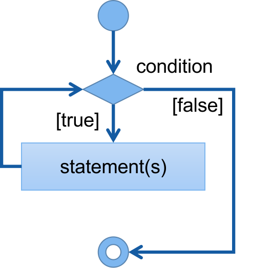
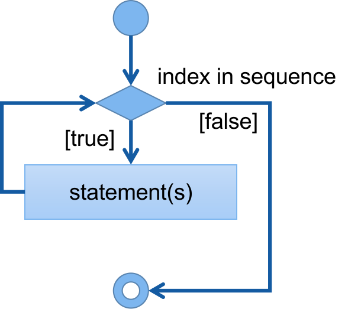
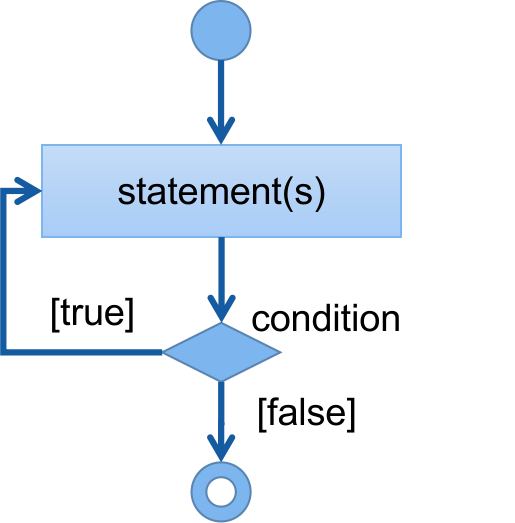

Learning programming with Python
loop statements are used to repeat a block of codes more than one time. In Python, we use a while-loop and for- loop. Python doesn't have a do-while loop.
to execute a block of statement repeatedly until while the condition is True.

while condition:
statement(s)
condition is an expression evaluates to True or False.
Example
count = 0while count < 3: print(count) count += 1
For-loop is used when we know how many times to repeat.
for index in sequence:
statement(s)
The range() is a function that generates a sequence. The range(n) generates a sequence of numbers starting from value 0 until n-1. For example, range(10) will generate 0 until 9. The default step is 1, which means the value is incremented by 1.
for indexin range(11): print(index)
Output
0 1 2 3 4 5 6 7 8 9 10 >
We can specify the starting value by using the range(start, end) to display from the start value to the end value. For example, range(3, 11) will generate a sequence of numbers from 3 until 10, with step value 1.
Outputfor indexin range(3,11): print(index)
3 4 5 6 7 8 9 10 >
To specify step value, range(start, end, step). This creates a sequence starting from the start until the end with the step specified. For example, range(4, 11, 2) generates a sequence starting from 4 until 11 with step 2. (4,6,8,10)
for indexin range(4,11,2): print(index)
Output
4 6 8 10 >
The do-while loop executes the statements at least once.
While-loop is not supported in Python, we can make a while-loop behave like one. This is done by using the True boolean value as the condition, so it at least runs once. A setting like this will create an infinite loop, so we use the if statement to execute the break statement to stop the loop.
while True : inputStr = input("Type anything, q for quit: ")if inputStr != 'q': print("You entered: ", inputStr)else :break
Output
Type anything, q for quit: Hello You entered: Hello Type anything, q for quit: red ball You entered: red ball Type anything, q for quit: q >
A break statement is used to terminate a loop immediately. A break statement is written in an if statement within a loop statement.
For example, displaying numbers from 0 to 10 stops printing if the number is 5.
for indexin range(0, 10): print(num)if index == 5: print("break...")break
Output
0 1 2 3 4 5 break... >
continue statement is used to skip current iteration and continue next one. Continue statesmen is also used in a if statement.
For example to display numbers from 0 to 9 but not the number 5.
for indexin range(0, 10):if index == 5: print("Continue...")continue print(index)
Output
0 1 2 3 4 Continue... 6 7 8 9 >